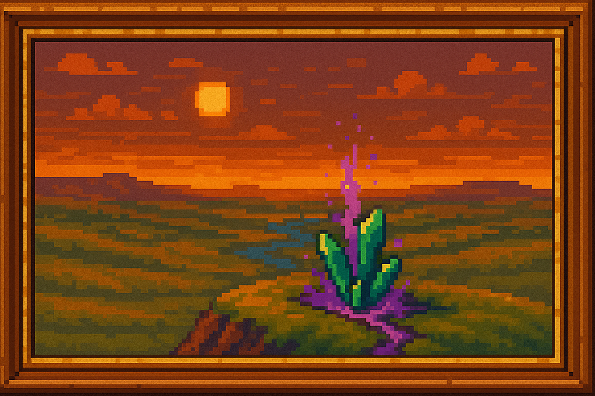

Introducción
En esta página encontrarás las tres grandes eras que han marcado la historia de Pepeland. Cada sección incluye sus etapas y eventos más relevantes.

🪨 ERA DORMIDA (Pre-magia)
En la quietud de la tierra yacía una fuerza latente; la Esencia dormida esperaba su despertar, mientras la humanidad ignoraba por completo su existencia.
- Ignorancia Arcana
La humanidad vive siglos sin saber de la existencia de la Esencia arcana.
La vida gira en torno a los elementos físicos, sin presencia de magia. - La Expedición de Kor-Balun
Mineros en busca de diamantes descubren, por accidente, el primer Pozo de esencia, con Cristales arcanos malformados. - La Liberación Inesperada
Al fragmentar un cristal, se libera una onda de Esencia arcana pura que recorre cuevas y aflora en la superficie del mundo. - La Maldición de los Primeros
Los miembros de la expedición quedan atrapados en un vacío espectral.
Desde entonces, todo aquel que desciende al Pozo desaparece.
🔮 ERA ARCANA
La chispa de la magia iluminó el mundo, desatando esplendor y contradicción; imperios se alzaron en su nombre y corazones se corrompieron con su poder.
Una era de esplendor, conflicto y decadencia mágica. Se divide en cuatro etapas clave:
🟣 1. El Despertar y la Expansión
- Aparición de los Pozos de Esencia
Surgen por todo el mundo, liberando magia usable a través de Cristales arcanos. - El Auge de los Idealistas
Sociedades comienzan a moldear el mundo con Esencia arcana.
Se fundan academias, clanes mágicos y ciudades encantadas. - La Disparidad Mágica
No todos pueden usar magia; surgen desigualdades entre quienes canalizan mucha esencia y quienes apenas la perciben. - La Corrupción Silenciosa
Algunos magos comienzan a abusar del poder.
Cristales se oscurecen, aparecen grietas brillantes y señales de inestabilidad.
💥 2. La Primera Ruptura
- Fragmentación Forzada
Cristales corrompidos estallan al ser sobreutilizados, liberando Esencia arcana pura e inutilizable. - Consecuencias Mundiales
El mundo cambia drásticamente:- Noches prolongadas
- Plagas destructivas
- Aparición de monstruos desconocidos
- División de los Magos:
- Protectores: intentan restaurar el equilibrio.
- Corruptos: desean dominar la esencia salvaje.
- Caídos: antes nobles, ahora rendidos al poder oscuro.
- Conflicto entre Magos
Inician guerras internas entre las tres facciones. - Batalla de Valencruz
Los protectores derrotan a un grupo de corruptos, pero deben sellar el lugar con sus vidas.
🩸 3. La Segunda Ruptura
- Uso descontrolado y corrupción total
A pesar de los intentos de restaurar el equilibrio, los magos corruptos y los poderes oscuros sobrecargan muchos Pozos de esencia. - Colapso de Cristales Arcanos
Las redes mágicas del mundo se saturan. Cristales centrales se sobrecargan y revientan, provocando ondas de destrucción masiva:- Devastación global
- Reinos enteros colapsan
- Ciudades flotantes caen
- La tierra se fragmenta en zonas inhóspitas
- Aceleración del odio hacia la magia
Las masas, testigos del horror, comienzan a rechazar toda forma de magia. Incluso los magos benévolos son considerados amenazas. - Fundación oculta de Nirthael
Los magos corruptos más poderosos inician en secreto la construcción de una fortaleza flotante como plan de huida: Nirthael.
⚔️ 4. La Guerra de los Fragmentos
- Alzamiento Tecnológico
Estados industriales y pueblos antimagia comienzan a organizarse.
Nace la Coalición tecnológica. - Inicio de la Guerra Mágico-Tecnológica
La coalición ataca con Disruptores mágicos y tecnología avanzada.
Los magos están divididos y debilitados. - Eventos clave del conflicto
- El Asedio de Láridel: ciudad mágica defensiva, destruida tras meses de resistencia.
- La Rebelión de Valencruz (cruce con etapa anterior).
- El Levantamiento de Arzkar: primera gran victoria tecnológica.
- El Incendio de Roenhal: destrucción del mayor archivo de conocimiento arcano.
- El Duelo de Elion y Kaetra: choque final entre mentor y alumna en ciudad flotante.
- El Colapso del Valle de Nhereth: intento fallido de manipular esencia mutada.
- Batalla Final Oficial: El Asedio del Bastión de Nirthael
Últimos magos corruptos intentan huir del continente en una fortaleza voladora.
La coalición lanza una ofensiva terrestre, aérea y de abordaje.
Nirthael es destruida y se sella el conflicto armado. - Batalla Final Extraoficial: La Masacre de Velanthar
Última ciudad mágica no militar, hogar de refugiados de todo tipo.
Es rodeada y destruida sin resistencia.
Representa la muerte simbólica de la cultura mágica.
🛠 ERA INDUSTRIAL (Post-magia)
Bajo el eco de las forjas y el zumbido de las máquinas, el mundo renació al amparo de la tecnología, relegando la magia a mito y advertencia.
- Implantación de los Sellos Supresores
Se desmantelan todos los Pozos activos.
Cristales son destruidos o almacenados en cámaras selladas. - Creación de Disruptores Mágicos Permanentes
Se dispersan por todo el continente para impedir cualquier concentración mágica. - Gran Caza de Magos
Los pocos practicantes que sobreviven son perseguidos, ejecutados o forzados al exilio. - Prohibición del Saber Arcano
Se reescriben los libros de historia.
La existencia de la magia se reduce a superstición peligrosa.
El nombre de muchas ciudades mágicas es eliminado de los mapas. - Redescubrimiento Tardío de la Esencia
Siglos después, se detecta que la Esencia arcana, aunque dispersa, sigue existiendo.
Algunos comienzan a usarla en secreto.
Se crean runas primitivas que esquivan los Disruptores.